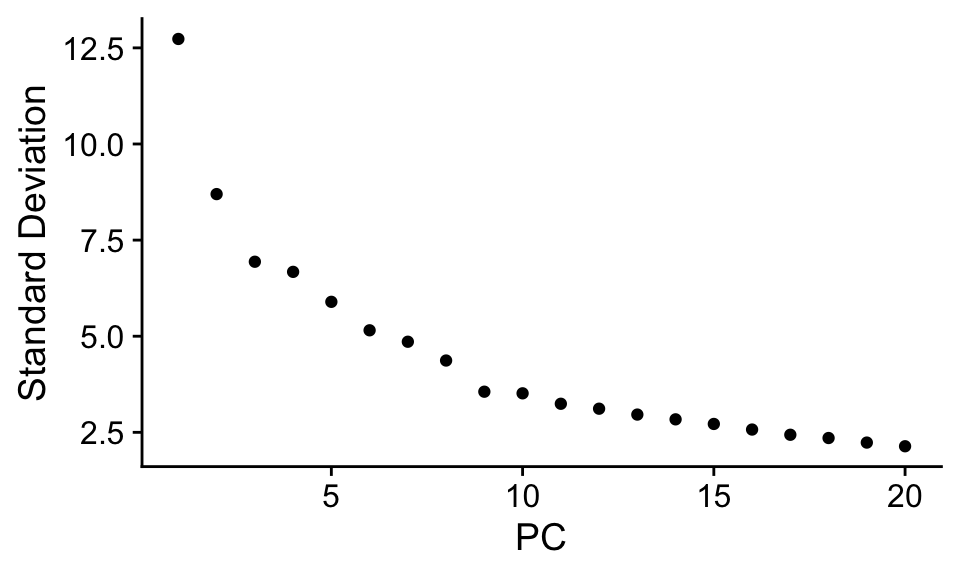
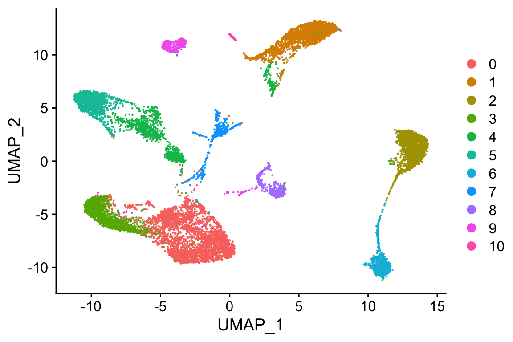
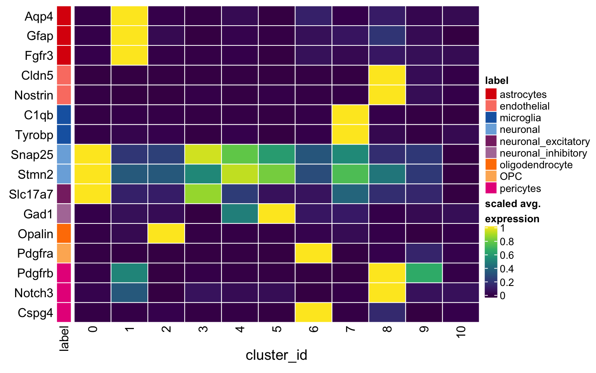

Last updated: 2019-09-05
Checks: 7 0
Knit directory: LPS/
This reproducible R Markdown analysis was created with workflowr (version 1.4.0). The Checks tab describes the reproducibility checks that were applied when the results were created. The Past versions tab lists the development history.
Great! Since the R Markdown file has been committed to the Git repository, you know the exact version of the code that produced these results.
Great job! The global environment was empty. Objects defined in the global environment can affect the analysis in your R Markdown file in unknown ways. For reproduciblity it’s best to always run the code in an empty environment.
The command set.seed(20190909) was run prior to running the code in the R Markdown file. Setting a seed ensures that any results that rely on randomness, e.g. subsampling or permutations, are reproducible.
Great job! Recording the operating system, R version, and package versions is critical for reproducibility.
Nice! There were no cached chunks for this analysis, so you can be confident that you successfully produced the results during this run.
Great job! Using relative paths to the files within your workflowr project makes it easier to run your code on other machines.
Great! You are using Git for version control. Tracking code development and connecting the code version to the results is critical for reproducibility. The version displayed above was the version of the Git repository at the time these results were generated.
Note that you need to be careful to ensure that all relevant files for the analysis have been committed to Git prior to generating the results (you can use wflow_publish or wflow_git_commit). workflowr only checks the R Markdown file, but you know if there are other scripts or data files that it depends on. Below is the status of the Git repository when the results were generated:
Ignored files:
Ignored: .DS_Store
Ignored: LPS/analysis/.DS_Store
Ignored: LPS/analysis/1-preprocessing_cache/
Ignored: LPS/analysis/3-differential_cache/
Ignored: LPS/data/1-SCE_reduced.rds
Ignored: LPS/output/.DS_Store
Ignored: LPS/output/2-SO_integrated.rds
Ignored: LPS/output/3-SCE_clustered.rds
Ignored: LPS/output/DS_results.rds
Ignored: cheatsheet.log
Untracked files:
Untracked: LPS/docs/figure/4-visualization.Rmd/
Unstaged changes:
Deleted: LPS/analysis/4-visualization.Rmd
Note that any generated files, e.g. HTML, png, CSS, etc., are not included in this status report because it is ok for generated content to have uncommitted changes.
These are the previous versions of the R Markdown and HTML files. If you’ve configured a remote Git repository (see ?wflow_git_remote), click on the hyperlinks in the table below to view them.
| File | Version | Author | Date | Message |
|---|---|---|---|---|
| Rmd | 47acdb5 | HelenaLC | 2019-09-05 | add LPS analysis |
| html | 47acdb5 | HelenaLC | 2019-09-05 | add LPS analysis |
library(ComplexHeatmap)
library(dplyr)
library(SingleCellExperiment)
library(Seurat)
library(viridis)so <- readRDS(file.path("output", "2-SO_integrated.rds"))so <- RunPCA(so, npcs = 30, verbose = FALSE)
ElbowPlot(so)
| Version | Author | Date |
|---|---|---|
| 47acdb5 | HelenaLC | 2019-09-05 |
so <- RunUMAP(so, reduction = "pca", dims = seq_len(9), verbose = FALSE)Warning: The default method for RunUMAP has changed from calling Python UMAP via reticulate to the R-native UWOT using the cosine metric
To use Python UMAP via reticulate, set umap.method to 'umap-learn' and metric to 'correlation'
This message will be shown once per sessionso <- FindNeighbors(so, reduction = "pca", dims = seq_len(9), verbose = FALSE)
for (r in (res <- c(0.1, 0.2, 0.4, 0.8, 1, 1.2, 2)))
so <- FindClusters(so, resolution = r, random.seed = 1, verbose = FALSE)
cols <- grep("res.", names(so@meta.data))
vapply(so@meta.data[cols], nlevels, numeric(1))integrated_snn_res.0.1 integrated_snn_res.0.2 integrated_snn_res.0.4
11 13 17
integrated_snn_res.0.8 integrated_snn_res.1 integrated_snn_res.1.2
25 25 27
integrated_snn_res.2
32 DimPlot(so, reduction = "umap", group.by = "integrated_snn_res.0.1")
| Version | Author | Date |
|---|---|---|
| 47acdb5 | HelenaLC | 2019-09-05 |
Idents(so) <- so$integrated_snn_res.0.1sce <- as.SingleCellExperiment(so, assay = "RNA")
colData(sce) <- as.data.frame(colData(sce)) %>%
mutate_if(is.character, as.factor) %>%
DataFrame(row.names = colnames(sce))
sce$cluster_id <- sce$integrated_snn_res.0.1# canoncial marker genes
mgs <- list(
astrocytes = c("Aqp4", "Gfap", "Fgfr3"),
endothelial = c("Cldn5","Nostrin"),
microglia = c("C1qb","Tyrobp"),
neuronal = c("Snap25", "Stmn2"),
neuronal_excitatory = "Slc17a7",
neuronal_inhibitory = "Gad1",
oligodendrocyte = "Opalin",
OPC = "Pdgfra",
pericytes = c("Pdgfrb", "Notch3", "Cspg4"))
mgs <- lapply(mgs, sapply, function(g)
grep(paste0(g, "$"), rownames(sce), value = TRUE))
gs <- gsub(".*\\.", "", unlist(mgs))
ks <- rep.int(names(mgs), vapply(mgs, length, numeric(1)))
labs <- sprintf("%s(%s)", gs, ks)
# split cells by cluster
cs_by_k <- split(colnames(sce), sce$cluster_id)
# compute cluster-marker means
ms_by_k <- lapply(mgs, function(gs)
vapply(cs_by_k, function(i)
rowMeans(logcounts(sce)[gs, i, drop = FALSE]),
numeric(length(gs))))
# prep. for plotting & scale b/w 0 and 1
mat <- do.call("rbind", ms_by_k)
mat <- muscat:::.scale(mat)
rownames(mat) <- gs
cols <- muscat:::.cluster_colors[seq_along(mgs)]
cols <- setNames(cols, names(mgs))
row_anno <- rowAnnotation(
df = data.frame(label = ks),
col = list(label = cols),
gp = gpar(col = "white"))
Heatmap(mat,
name = "scaled avg.\nexpression",
col = viridis(10),
cluster_rows = FALSE,
cluster_columns = FALSE,
row_names_side = "left",
column_title = "cluster_id",
column_title_side = "bottom",
rect_gp = gpar(col = "white"),
left_annotation = row_anno)
| Version | Author | Date |
|---|---|---|
| 47acdb5 | HelenaLC | 2019-09-05 |
# cluster annotation
anno <- list(
"Astrocytes" = 1,
"Endothelial" = 8,
"Microglia" = 7,
"OPC" = 6,
"Oligodendrocytes" = 2,
"Neuronal_excit" = c(0, 3, 7),
"Neuronal_inhib" = c(4, 5))
m <- match(sce$cluster_id, unlist(anno))
ns <- vapply(anno, length, numeric(1))
labs <- rep.int(names(anno), ns)
sce$cluster_id <- factor(labs[m], levels = names(anno))
# remove unassigned cells
sce <- sce[, !is.na(sce$cluster_id)]
# cluster-sample cell counts
table(sce$sample_id, sce$cluster_id)
Astrocytes Endothelial Microglia OPC Oligodendrocytes
LC016_WT 157 46 28 91 163
LC017_LPS 110 33 32 38 77
LC019_WT 212 50 27 72 175
LC020_LPS 256 93 94 82 202
LC022_WT 275 39 53 118 430
LC023_LPS 204 57 41 106 151
LC025_WT 90 32 41 52 92
LC026_LPS 368 85 129 155 228
Neuronal_excit Neuronal_inhib
LC016_WT 865 341
LC017_LPS 478 220
LC019_WT 358 95
LC020_LPS 382 266
LC022_WT 520 281
LC023_LPS 645 275
LC025_WT 415 456
LC026_LPS 745 354saveRDS(sce, file.path("output", "3-SCE_clustered.rds"))
sessionInfo()R version 3.6.0 beta (2019-04-15 r76395)
Platform: x86_64-apple-darwin15.6.0 (64-bit)
Running under: macOS Mojave 10.14.6
Matrix products: default
BLAS: /Library/Frameworks/R.framework/Versions/3.6/Resources/lib/libRblas.0.dylib
LAPACK: /Library/Frameworks/R.framework/Versions/3.6/Resources/lib/libRlapack.dylib
locale:
[1] en_US.UTF-8/en_US.UTF-8/en_US.UTF-8/C/en_US.UTF-8/en_US.UTF-8
attached base packages:
[1] parallel stats4 grid stats graphics grDevices utils
[8] datasets methods base
other attached packages:
[1] viridis_0.5.1 viridisLite_0.3.0
[3] Seurat_3.1.0 SingleCellExperiment_1.7.7
[5] SummarizedExperiment_1.15.8 DelayedArray_0.11.4
[7] BiocParallel_1.19.2 matrixStats_0.54.0
[9] Biobase_2.45.0 GenomicRanges_1.37.14
[11] GenomeInfoDb_1.21.1 IRanges_2.19.14
[13] S4Vectors_0.23.20 BiocGenerics_0.31.5
[15] dplyr_0.8.3 ComplexHeatmap_2.1.0
loaded via a namespace (and not attached):
[1] reticulate_1.13 R.utils_2.9.0
[3] tidyselect_0.2.5 lme4_1.1-21
[5] RSQLite_2.1.2 AnnotationDbi_1.47.1
[7] htmlwidgets_1.3 Rtsne_0.15
[9] munsell_0.5.0 codetools_0.2-16
[11] ica_1.0-2 future_1.14.0
[13] colorspace_1.4-1 knitr_1.24
[15] rstudioapi_0.10 ROCR_1.0-7
[17] gbRd_0.4-11 listenv_0.7.0
[19] Rdpack_0.11-0 labeling_0.3
[21] git2r_0.26.1 muscat_0.99.8
[23] GenomeInfoDbData_1.2.1 bit64_0.9-7
[25] glmmTMB_0.2.3 rprojroot_1.3-2
[27] vctrs_0.2.0 xfun_0.9
[29] R6_2.4.0 doParallel_1.0.15
[31] ggbeeswarm_0.6.0 clue_0.3-57
[33] rsvd_1.0.2 locfit_1.5-9.1
[35] bitops_1.0-6 assertthat_0.2.1
[37] SDMTools_1.1-221.1 scales_1.0.0
[39] nnet_7.3-12 beeswarm_0.2.3
[41] gtable_0.3.0 npsurv_0.4-0
[43] globals_0.12.4 workflowr_1.4.0
[45] rlang_0.4.0 zeallot_0.1.0
[47] genefilter_1.67.1 GlobalOptions_0.1.0
[49] splines_3.6.0 TMB_1.7.15
[51] lazyeval_0.2.2 acepack_1.4.1
[53] checkmate_1.9.4 yaml_2.2.0
[55] reshape2_1.4.3 backports_1.1.4
[57] Hmisc_4.2-0 tools_3.6.0
[59] ggplot2_3.2.1 gplots_3.0.1.1
[61] RColorBrewer_1.1-2 ggridges_0.5.1
[63] Rcpp_1.0.2 plyr_1.8.4
[65] progress_1.2.2 base64enc_0.1-3
[67] zlibbioc_1.31.0 purrr_0.3.2
[69] RCurl_1.95-4.12 prettyunits_1.0.2
[71] rpart_4.1-15 pbapply_1.4-2
[73] GetoptLong_0.1.7 cowplot_1.0.0
[75] zoo_1.8-6 ggrepel_0.8.1
[77] cluster_2.1.0 colorRamps_2.3
[79] fs_1.3.1 variancePartition_1.15.4
[81] magrittr_1.5 data.table_1.12.2
[83] RSpectra_0.15-0 lmerTest_3.1-0
[85] circlize_0.4.7 lmtest_0.9-37
[87] RANN_2.6.1 whisker_0.4
[89] fitdistrplus_1.0-14 hms_0.5.1
[91] lsei_1.2-0 evaluate_0.14
[93] xtable_1.8-4 pbkrtest_0.4-7
[95] XML_3.98-1.20 gridExtra_2.3
[97] shape_1.4.4 scater_1.13.18
[99] compiler_3.6.0 tibble_2.1.3
[101] KernSmooth_2.23-15 crayon_1.3.4
[103] minqa_1.2.4 R.oo_1.22.0
[105] htmltools_0.3.6 Formula_1.2-3
[107] tidyr_0.8.3 geneplotter_1.63.0
[109] RcppParallel_4.4.3 DBI_1.0.0
[111] MASS_7.3-51.4 boot_1.3-23
[113] Matrix_1.2-17 R.methodsS3_1.7.1
[115] gdata_2.18.0 metap_1.1
[117] igraph_1.2.4.1 pkgconfig_2.0.2
[119] numDeriv_2016.8-1.1 foreign_0.8-72
[121] plotly_4.9.0 foreach_1.4.7
[123] annotate_1.63.0 vipor_0.4.5
[125] blme_1.0-4 XVector_0.25.0
[127] bibtex_0.4.2 stringr_1.4.0
[129] digest_0.6.20 sctransform_0.2.0
[131] RcppAnnoy_0.0.12 tsne_0.1-3
[133] rmarkdown_1.15 leiden_0.3.1
[135] htmlTable_1.13.1 uwot_0.1.3
[137] edgeR_3.27.13 DelayedMatrixStats_1.7.1
[139] gtools_3.8.1 rjson_0.2.20
[141] nloptr_1.2.1 nlme_3.1-141
[143] jsonlite_1.6 BiocNeighbors_1.3.3
[145] limma_3.41.15 pillar_1.4.2
[147] lattice_0.20-38 httr_1.4.1
[149] survival_2.44-1.1 glue_1.3.1
[151] png_0.1-7 iterators_1.0.12
[153] bit_1.1-14 stringi_1.4.3
[155] blob_1.2.0 BiocSingular_1.1.5
[157] DESeq2_1.25.10 latticeExtra_0.6-28
[159] caTools_1.17.1.2 memoise_1.1.0
[161] irlba_2.3.3 future.apply_1.3.0
[163] ape_5.3